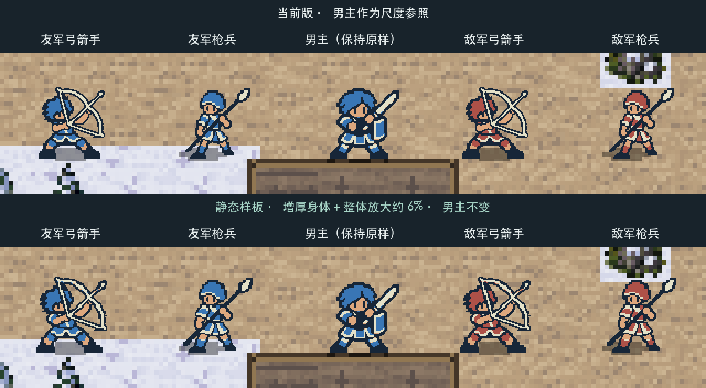
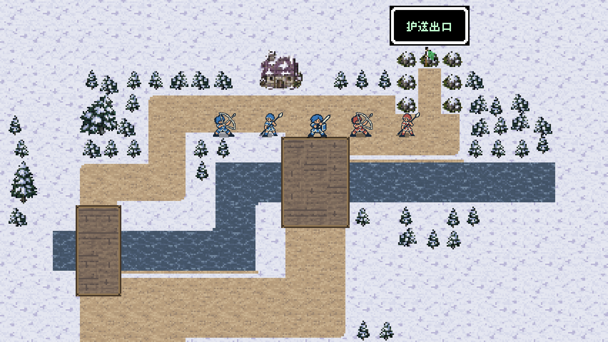

角色体量 · 静态样板对照
双方弓箭手、枪兵增厚身体，并整体放大约 6%。保持原有姿势和简洁四色，男主作为固定参照。先验收体量，再扩展动作。
本轮仅静态样板；现有动画、游戏素材与 0.8.6 测试包保持不变。
同一落脚位置，直接比较
来自实际首关战斗地图的后台预览截图。上下两排相同站位、相同地面、相同阴影；中间男主完全不变。此处裁出局部并放大 2 倍，完整场景见下方。



实际战斗地图 · 同位置切换
临时预览只替换四类角色的待机首帧，男主与背景均保持原样。完整地图可检查角色与场景的协调程度。


制作与检查记录
使用 ImageGen 修订身体轮廓，保留原头部像素，再作 6.25% 等比放大及脚底对齐。敌我使用一致体型、蓝／红阵营配色；每张交付图 96×96 像素。临时后台进程使用真实 M11 地图和游戏绘制流程，未写入运行资源。